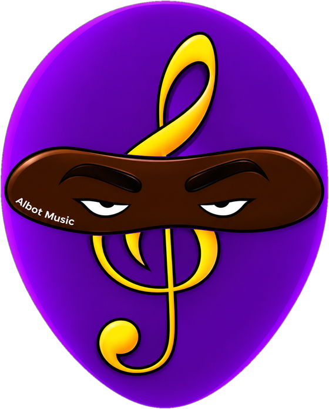

Instrumental / Selbst produziert / Aus Detroit
Ein Produzent, eine Stadt – und nach langer Pause die Rückkehr zu dem, was einst im Musikraum der Mittelstufe begann.
Der komplette Katalog von Albot Music ist auf allen großen Streaming-Diensten verfügbar. Die in deinem Land beliebtesten stehen ganz oben.
Albot Music begann mit bescheidenen Anfängen in Detroit – ein Junge im Musikraum der Schule, der etwas gefunden hatte, das er nicht mehr loslassen wollte. Diese Liebe zur Musik begleitete ihn bis zum Ende der Schulzeit.
Dann ging das Leben weiter, und die Musik verstummte für Jahre. Erst die erzwungene Ruhe der COVID-19-Pandemie brachte sie zurück – diesmal für immer. So entstand Albot Music LLC, und der Künstler Albot Music™ begann zu veröffentlichen.
Jeder Track ist instrumental und komplett selbst gemacht: geschrieben, eingespielt und produziert in Eigenregie – von der ersten Idee bis zum finalen Mix.
Der einzige Song im Katalog mit Gesang – meine Frau und ich, wie wir uns gegenseitig unsere Liebe gestehen. Eine Instrumentalversion gibt es ebenfalls.